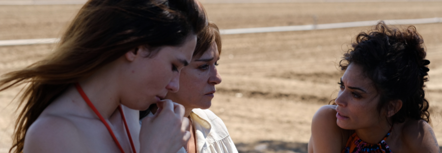

FUORI (2025)
FUORI (Mario Martone, 2025, 117 min, Digital, Italian with English subtitles)
A movie night presented by the Department of French and Italian and the Italian Cultural Institute of Chicago.
Rome, 1980. The writer Goliarda Sapienza, author of The Art of Joy ends up in prison for stealing jewelry, but her encounter with several young inmates becomes an experience of rebirth. After their release, during a hot Roman summer, the women continue to see one another, and Goliarda forms a deep bond with Roberta, a habitual offender and political activist. It is a relationship that no one on the outside can truly understand, yet through it, Goliarda rediscovers the joy of living and the inspiration to write.
The screening will be introduced by Massimiliano Luca Delfino, Associate Professor of Instruction, Northwestern University, Department of French and Italian.
The event is presented in collaboration with the Italian Cultural Institute of Chicago.